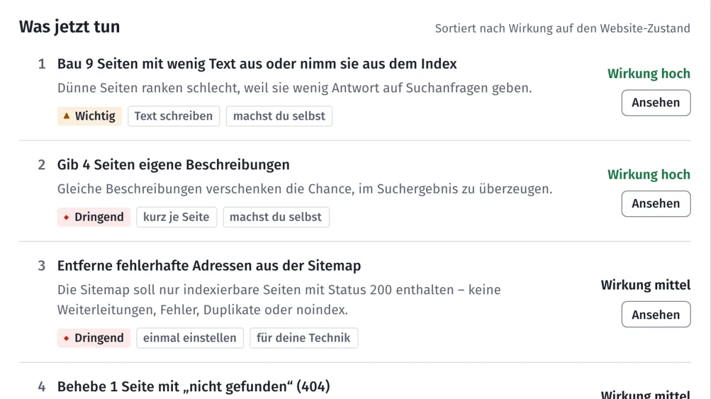
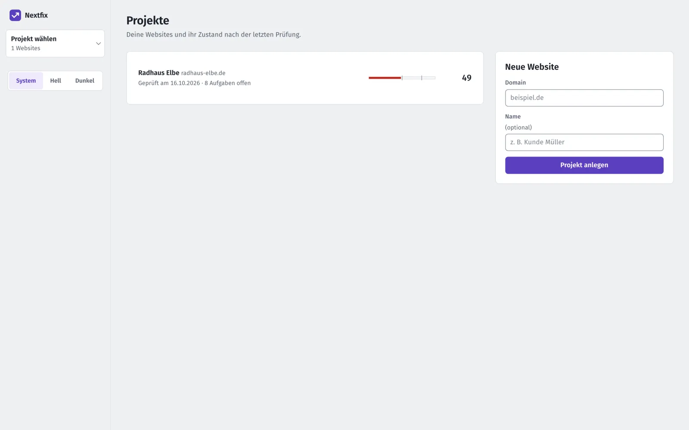
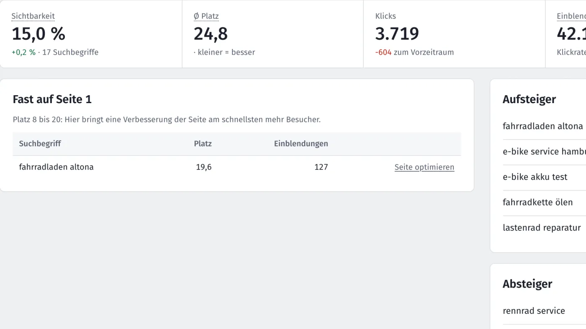
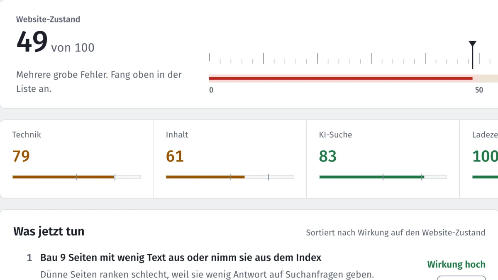

Häufige Fragen
Kurze Antworten, auch auf die unbequemen Fragen.
Grundsätzliches

Was ist Nextfix?
Ein SEO-Tool, das auf deinem eigenen Rechner läuft. Es prüft deine Website und macht aus den Ergebnissen eine kurze Liste: was du zuerst tust, warum, wie, und wer es erledigt. Dazu kommen Ladezeit, Positionen bei Google und Bing, Suchbegriffe und Tipps für einzelne Seiten.
Kostet Nextfix wirklich nichts?
Ja. Der Quellcode ist offen (MIT-Lizenz), es gibt kein Abo und keine bezahlten Schnittstellen. Die Daten kommen von deiner Website, aus der Google Search Console und von Bing, beide kostenlos. Für die Domain-Autorität brauchst du einen kostenlosen Schlüssel von Open PageRank.
Für wen ist Nextfix gedacht?
Für alle, die ihre Website selbst pflegen oder pflegen lassen und kein Budget für SEO-Software haben: Freiberufler, Handwerker, kleine Firmen, Vereine. Fachbegriffe werden erklärt, Aufgaben stehen in ganzen Sätzen.
Ersetzt Nextfix eine Agentur?
Nein. Es sagt dir, was zu tun ist, und bei jeder Aufgabe, ob du sie selbst im CMS erledigst oder deine Technik ran muss. Machen musst du oder dein Entwickler es trotzdem. Mit der Liste weißt du aber genau, was du beauftragst.
Wer steckt dahinter?
Ein privates Open-Source-Projekt, entwickelt auf GitHub. Kein Unternehmen, keine Werbung, kein Verkauf von Daten.
Installation und Technik

Muss ich programmieren können?
Nein. Du öffnest einmal das Terminal und fügst ein paar Befehle ein, oder lässt das deinen Webbetreuer machen. Die Anleitung erklärt jeden Schritt. Danach läuft alles im Browser.
Läuft das auch unter Windows?
Nextfix wird auf dem Mac entwickelt und getestet. Mit Python 3.12 sollte es auch unter Windows und Linux laufen, ausprobiert ist das aber noch nicht. Wenn du es testest, freut sich das Projekt über eine Rückmeldung auf GitHub.
Kann ich auch fremde Websites prüfen?
Ja, der Website-Check braucht keinen Zugang, nur die Adresse. Der Crawler ruft die Seiten nacheinander ab, nicht parallel, und hält sich standardmäßig an die robots.txt. Positionen gibt es nur für Websites, deren Search Console du verbunden hast.
Was ist MCP, und brauche ich Claude?
Nein, die Oberfläche im Browser reicht. MCP ist eine Schnittstelle, über die Claude Programme bedienen kann. Nextfix bietet dort 50 Werkzeuge an. Wer Claude nutzt, kann dann im Chat sagen: „Prüf meine Website und erklär mir die drei wichtigsten Aufgaben.“
Daten und Datenschutz

Wohin gehen meine Daten?
Nirgendwohin. Ergebnisse liegen in einer Datei auf deinem Rechner (data/seo.db). Nextfix ruft deine Website ab und, wenn du es einrichtest, Search Console, Bing und Open PageRank. Für Suchbegriff-Ideen fragt es die Google-Vorschläge beim Tippen ab. Kein Konto, kein Tracking.
Fragt Nextfix Google-Suchergebnisse ab?
Nein. Das automatische Abfragen von Google-Ergebnissen verbieten die Nutzungsbedingungen. Deine Positionen kommen deshalb aus der Search Console und von Bing, also aus den Daten, die dir als Website-Betreiber ohnehin zustehen.
Ergebnisse verstehen

Was bedeutet der Website-Zustand?
Eine Zahl von 0 bis 100, die zeigt, wie viele und wie schwere Probleme gefunden wurden. Ab 80 gilt eine Website als gut gepflegt, unter 50 gibt es mehrere grobe Fehler. Ein Fehler auf vielen Seiten wiegt schwerer als einer auf einer einzelnen Seite.
Die Zahl sagt nichts darüber, auf welchem Platz du bei Google landest. Sie ist ein Maß für den Pflegezustand, nicht fürs Ranking.
Warum gibt es keine Punkte je Aufgabe?
Weil niemand seriös vorhersagen kann, was eine Behebung bei Google bringt. Eine Angabe wie „+4,2 Punkte“ täuscht Genauigkeit vor. Nextfix sortiert die Aufgaben trotzdem nach ihrem Gewicht und zeigt die Wirkung in drei Stufen: hoch, mittel, gering.
Was heißt „Bewusst so“?
Manches ist Absicht: eine Login-Seite ohne Text, ein Impressum ohne Beschreibung. Markierst du ein Problem, eine Seite oder eine einzelne Fundstelle als „Bewusst so“, zählt es nicht mehr im Zustand und taucht nicht in den Aufgaben auf. Du kannst es jederzeit zurücknehmen.
Was kann Nextfix nicht?
Es zeigt keine Positionen deiner Konkurrenz und keine einzelnen Backlinks, dafür bräuchte es bezahlte Datenbanken. Die Ladezeit misst es im Labor auf deinem Rechner, nicht bei echten Besuchern.